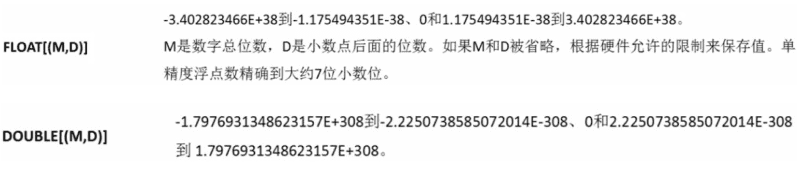
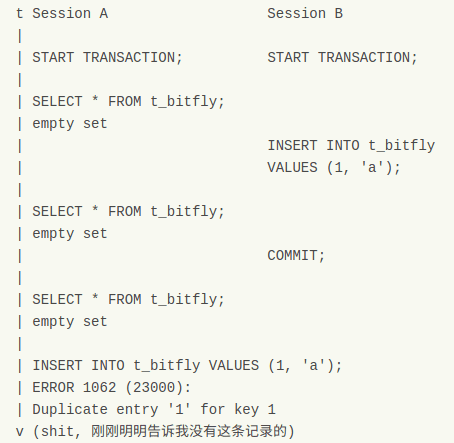

基本操作
- 创建数据库：create database if not exists dbName default character set UTF8;
- 修改数据库编码：alter database dbName default character set UTF8;
- 删除数据库：drop database if exists dbName;
备份与还原
- 备份一个数据库：mysqldump -u username -p dbname table1 table2 …(若没有指定table则备份整个数据库) > backup.sqｌ
- 备份多个数据库：mysqldump -u username -p –databases dbname2 dbname2 > backup.sqｌ
- 备份所有数据库：mysqldump -u username -p -all-databases > backup.sqｌ
- 还原数据：mysql -u root -p [dbname] < backup.sqｌ
backup.sql内容：
1 | -- MySQL dump 10.13 Distrib 5.6.30, for debian-linux-gnu (x86_64) |
由于原表中存在外键，所以sql文件中的建表顺序会导致还原失败，应该在备份的时候指定备份表的顺序．
数据类型
整型
无符号则在其后加 UNSIGNED
浮点型
日期型
- year
- time
- date
- datetime
- timestamp
字符型

联表查询
- LEFT JOIN 左连接查询: 查询两个表中共有的数据，并以左边的表为基准显示左表的全部数据，显示右表符合条件的数据, 不足的地方显示NULL
- RIGHT JOIN 右连接查询: 查询两个表共有的数据，并以右表为基准显示右表的全部数据，显示左表符合条件的数据不足的地方显示NULL
- INNER JOIN 内连接查询: 显示两个表共有的数据
1 | SELECT * FROM tbl_a AS a LEFT JOIN tbl_b AS b ON a.id=b.id; |
约束
NOT NULL
PRIMARY KEY
UNIQUE KEY
FOREIGN KEY
概述
- MySQL中“键”和“索引”的定义相同，所以外键和主键一样也是索引的一种。MySQL会自动为所有表的主键进行索引，但是外键字段必须由用户进行明确的索引。用于外键关系的字段必须在所有的参照表中进行明确地索引，InnoDB不能自动地创建索引。
- 外键可以是一对一的，一个表的记录只能与另一个表的一条记录连接，或者是一对多的，一个表的记录与另一个表的多条记录连接。
- 外键的使用条件
- 两个表必须是InnoDB表，MyISAM表暂时不支持外键
- 外键列必须建立了索引，MySQL4.1.2以后的版本在建立外键时会自动创建索引，但如果在较早的版本则需要显式建立；
- 外键关系的两个表的列必须是数据类型相似，也就是可以相互转换类型的列，比如int和tinyint可以，而int和char则不可以；
- 外键的好处：可以使得两张表关联，保证数据的一致性和实现一些级联操作。保持数据一致性，完整性，主要目的是控制存储在外键表中的数据。
- 和b表链表后，两表之间建立了链表关系，a表受b表约束，也就是当a表添加或者修改一条数据时、这条数据的外键字段值如果是b表主键字段不存在的，将无法添加，会报错。
- 语法：
1 | [CONSTRAINT symbol] FOREIGN KEY [id] (index_col_name, ...) |
使用方法
创建表并且设置外键链表
1 | KEY 外键名称 (外键字段), #设置外键名称 |
1 | CREATE TABLE `usr` ( |
删除表的外键链表
1 | ALTER TABLE 删除外键的表名称 DROP FOREIGN KEY 创建外键时的外键名称;#删除外键 |
1 | ALTER TABLE usr DROP FOREIGN KEY usr_usr_fzu; |
创建表的外键链表
1 | ALTER TABLE 要创建外键的表 ADD CONSTRAINT 设置外键名称 FOREIGN KEY (外键字段) REFERENCES 要连接的表名称 (要连接表的主键id);#创建外键 |
1 | ALTER TABLE usr ADD CONSTRAINT usr_usr_fzu FOREIGN KEY (fzu) REFERENCES usr_fzu (id); |
事件触发
在父表（先创建）上进行update/delete以更新或删除在子表中有一条或多条对应匹配行的候选键时，父表的行为取决于：在定义子表的外键时指定的on update/on delete子句。
| 关键字 | 含义 |
|---|---|
| CASCADE | 关联操作，如果主表被更新或删除，从表也会执行相应的操作 |
| RESTRICT | 拒绝主表的相关操作(这是默认设置，也是最安全的设置) |
| SET NULL | 修改包含与已删除键值有参照关系的所有记录，使用NULL值替换(只能用于已标记为NOT NULL的字段) |
| SET DEFAULT | 设默认值 |
| NO ACTION | 无动作 |
DEFAULT
在创建表的时候添加
- CREATE TABLE t_user(user_id INT(10) DEFAULT 3);
通过 ALTER 语句
- ALTER TABLE t_user MODIFY user_id INT(10) DEFAULT 2;
- ALTER TABLE t_user CHANGE user_id user_id INT(10) DEFAULT 2;
删除默认约束
- ALTER TABLE t_user MODIFY user_id INT(10);
- ALTER TABLE t_user CHANGE user_id user_id INT(10);
事务
概述
事务的四个属性（ACID）：
- 原子性(Atomicity):事务是一个完整的操作。
- 一致性（Consistency）：当事务完成时，数据必须处于一致状态。在事务开始以前，被操作的数据的完整性处于一致性的状态，事务结束后，被操作的数据的完整性也必须处于一致性状态。拿银行转账来说，一致性要求事务的执行不应改变A、B 两个账户的金额总和。如果没有这种一致性要求，转账过程中就会发生钱无中生有，或者不翼而飞的现象。事务应该把数据库从一个一致性状态转换到另外一个一致性状态。
- 隔离性(Isolation):对数据进行修改的所有并发事务是彼此隔离的。
- 持久性(Durability):事务完成后，它对于系统的影响是永久性的。
没有隔离性带来的问题：
- 脏读，最容易理解。另一个事务修改了数据，但尚未提交，而本事务中的SELECT会读到这些未被提交的数据。
- 不重复读。解决了脏读后，会遇到，同一个事务执行过程中，另外一个事务提交了新数据，因此本事务先后两次读到的数据结果会不一致。
- 幻读。解决了不重复读，保证了同一个事务里，查询的结果都是事务开始时的状态（一致性）。但是，如果另一个事务同时提交了新数据，本事务再更新时，就会“惊奇的”发现了这些新数据，貌似之前读到的数据是“鬼影”一样的幻觉。
| 事务隔离级别 | 脏读 | 不可重复读 | 幻读 |
|---|---|---|---|
| 读未提交（read-uncommitted） | 是 | 是 | 是 |
| 不可重复读（read-committed） | 否 | 是 | 是 |
| 可重复读（repeatable-read） | 否 | 否 | 是 |
| 串行化（serializable） | 否 | 否 | 否 |
Read Uncommitted（读取未提交内容）
- 在该隔离级别，所有事务都可以看到其他未提交事务的执行结果。本隔离级别很少用于实际应用，因为它的性能也不比其他级别好多少。读取未提交的数据，也被称之为脏读（Dirty Read）。
Read Committed（读取提交内容）
- 这是大多数数据库系统的默认隔离级别（但不是MySQL默认的）。它满足了隔离的简单定义：一个事务只能看见已经提交事务所做的改变。这种隔离级别 也支持所谓的不可重复读（Nonrepeatable Read），因为同一事务的其他实例在该实例处理其间可能会有新的commit，所以同一select可能返回不同结果。
Repeatable Read（可重读）
- 这是MySQL的默认事务隔离级别，它确保同一事务的多个实例在并发读取数据时，会看到同样的数据行。不过理论上，这会导致另一个棘手的问题：幻读 （Phantom Read）。简单的说，幻读指当用户读取某一范围的数据行时，另一个事务又在该范围内插入了新行，当用户再读取该范围的数据行时，会发现有新的“幻影” 行。InnoDB和Falcon存储引擎通过多版本并发控制（MVCC，Multiversion Concurrency Control）机制解决了该问题。
Serializable（可串行化）
- 这是最高的隔离级别，它通过强制事务排序，使之不可能相互冲突，从而解决幻读问题。简言之，它是在每个读的数据行上加上共享锁。在这个级别，可能导致大量的超时现象和锁竞争。
实例
不重复读：
1 | 1>begin; |
1 | 1>begin; |
1 | 1>begin; |
幻读：
会出现两条记录。MySQL
- begin
- commit
- rollback
- SET [SESSION|GLOBAL] TRANSACTION ISOLATION LEVEL [READ UNCOMMITTED|READ COMMITTED|REPEATABLE READ|SERIALIZABLE]
SQL优化
- 查询条件减少使用函数,避免全表扫描
- 减少不必要的表连接
- 有些数据操作的业务逻辑可以放到应用层进行实现
- 当只要一行数据时使用 LIMIT 1
- 为搜索字段建立索引
- 复合索引最左原则
- 避免select *
- 选择正确的存储引擎
- 避免隐式类型转换
- 不建议使用%前缀模糊查询